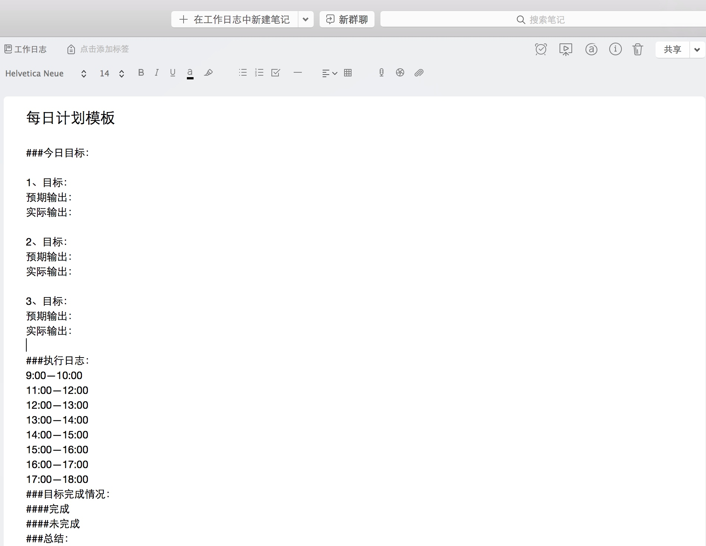

光有方法论怎么行？工作日志帮你更好的搞定工作！
作为一个产品经理，时间永远都是不够用的，不管是做市场研究、还是产品设计、研发项目的跟踪，策略的制定，还是做营销支撑，产品的各方面的工作都要产品经理参与其中，为了保证自己不被工作给累死，同时的进步，就需要有一个可延续的时间管理和工作迭代方法，前几篇文章，我都有介绍过工作的几个基本的方法论，有兴趣的看看我微信号里面写的关于工作方法论的文章。
这一篇我们就说一下一个比较实际的能够提高工作产出的东西：工作日志。
工作日志，顾名思义，就是对你工作过程的记录，试着想象一下，如果我们每个人都是一台机器，我们能够记录我们每天做什么事情，浪费了多少时间，并同时对自己的时间分配进行控制会怎样？是不是会很厉害？
当然，成为机器并不是我们想要的，我们想要的是最终能够成为一个像机器一样专业以及利害，能够稳定输出价值的人。记录工作日志，就是实现这一过程所必不可少的过程了。
说到记录工作日志这件事之前，我说一下我记录工作日志的基本原则：
- 遵守工作的基本方法论以确保这个过程是可以让自己持续进步
这个工作日志的模板是按照PDCA的方式，同时结合SMART以及5W1H原则来设计的
- 记录过程需要简单以确保记录过程是无痛和简单的
它使用markdown语法编写，因为markdown无需考虑排版即可生成排版好以后的文章，所以就无需考虑格式和排版，我将其保存到印象笔记内，因为考虑到它是可以多平台同步，同时打开方便，容易规整。就更无需特地去找文件夹来保存工作日志了。
接下来我们说下记录工作日志的方法：
我工作日志记录的方法是在印象笔记里面新建一个笔记本，名字叫做工作日志。同时在笔记本里面建了一个文件叫做日志模板，每天只需要新建一个以当前日期为名称的笔记，然后复制这个模板的内容，确保我很快的就可以制定好计划，然后开始工作。模板如下：

准备: 每天在上班路上的时候，就要开始思考今天大体需要做什么。那么，到了公司以后的第一件事情就记下来自己自己今天的目标。因为随时都有可能会有很多事情过来找我，所以我只能大致给出想要做的事情在什么时间点开始做，比如说我我可以给自己安排上午绘制原型，下午整理运营的策略分析，
计划:写计划的时候，需要明确一下，究竟我这个任务最后输出的是什么？因为做任何事情都必须要有输出，没有输出的工作是毫无意义的，或者换个方面来说就是：工作无法有输出的人，对公司是不会有任何价值的。
执行: 按照计划执行即可，每工作一到两个小时，就记录一下自己做了什么，耗费了多长时间，这是工作日志最重要也是最核心的一点。因为记录了以后，可以让自己在晚上总结的时候，详细review自己的工作
检查：每完成一项任务，就在这个任务前面打一个勾，如果未完成就打一个叉
很多人喜欢在面试的时候强调说自己执行力强。那究竟什么叫执行力强呢？我觉得执行力就是，你给自己定下今天必须要完成的目标，完成了，就叫做有执行力，如果完成不了，那就不能算是有执行力，要是总完成不了，那叫拖延症。
- 改进：每天下班前进行一次总结，写一下自己任务是否完成，如果未完成，未完成的原因在哪，找出原因来，第二天再改进它。然后每周再系统性的总结一次，犯过的错误可以允许重犯，但如果是一而再，再而三的重犯则是无法容忍的。
如果能够坚持下来，养成记录工作日志并定期回顾的好的习惯，工作的效率不但会得到一个非常大的提升，同时还有如下几点好处：
- 1、能够发现自己平时发现不了的坏习惯
- 2、对时间的预估越来越准确
- 3、执行力越来越强
关于如何坚持，下篇文章会说一些我使用过的方法和心得